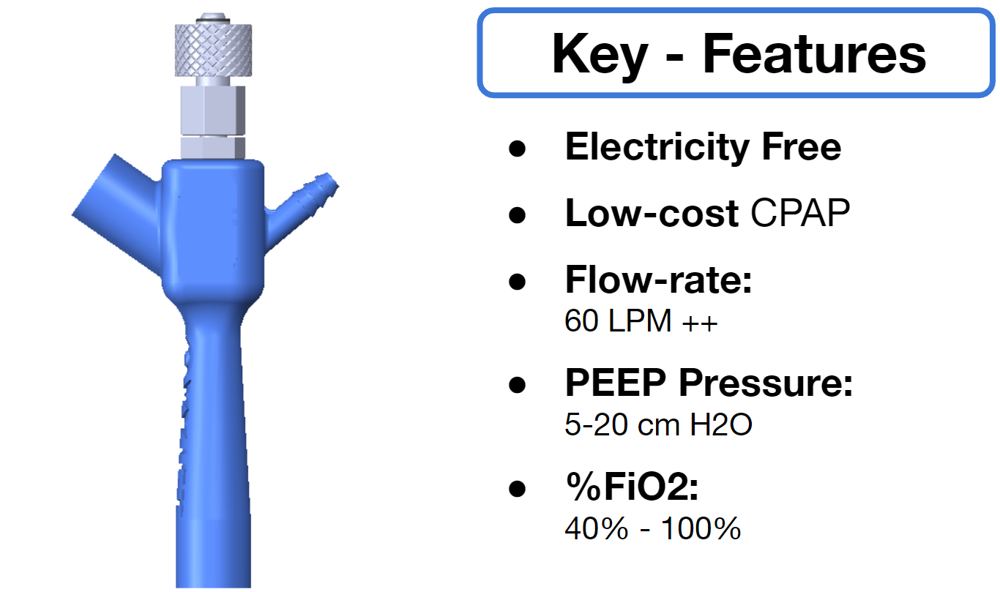
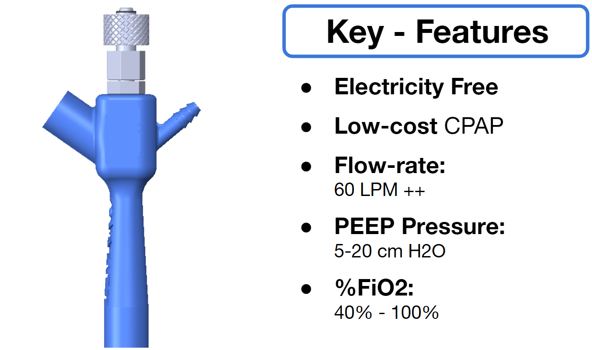
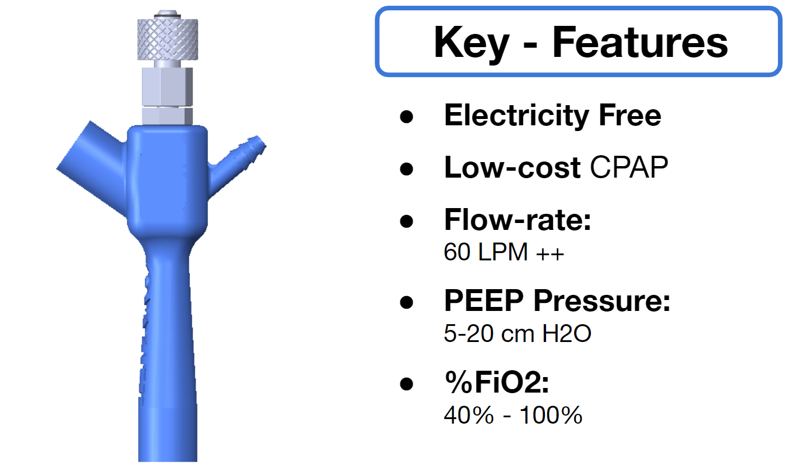

The design and evaluation of the device is presented in the arxiv paper here
OxyJet, is a low-cost non-invasive ventilator to designed to treat Covid-19 patients. The device can provide 60 L/min of oxygen with up to 100% concentration without any electricity. Interim data of ongoing clinical trials have shown that its efficacy is non-inferior to traditional high-flow nasal cannula (HFNC) devices. However, OxyJet uses 30% less oxygen compared to HFNC devices for an equivalent clinical outcome. The device design has been open-sourced by the inventors.
The Covid-19 pandemic has strained the hospital systems in many countries in the world, especially in the developing countries. Most hospital wards in developing countries cannot provide more than 15 liters/min of oxygen. This is not sufficient for many severe Covid-19 patients who need a high-flow nasal cannula (HFNC) or C-PAP ventilators. However, HFNC devices can cost up to $5000 and traditional C-PAP devices can cost up to $1000. In contrast, the OxyJet device itself only costs around $20 and with all accessories a full set can cost up to $200. Besides, HFNO devices operate on electric power, which is unreliable in many low-resource hospitals - whereas OxyJet does not require electric power. With shortage of Intensive Care Unit (ICU) beds, this is a major problem since intermediate forms of treatments are simply not available at an affordable cost.
We have developed OxyJet CPAP mainly to address this gap and reduce ICU admissions specifically for low and middle-income country (LMIC) hospitals. At its core, OxyJet is a precision venturi-based system that uses the pressure of the medical oxygen source to generate a high-flow of air and oxygen mixture by the jet-mixing principle. It is easily manufacturable using 3D printing, CNC machining and combining available components in the market. Variants of the system can provide up to 100 L/m of flow if required. Non-vented C-PAP masks and HEPA filters are used in the system to reduce aerosolization. Pressure settings can be changed using a traditional PEEP valve between 5-20cm H2O. The device is manufactured using local 3D printing and workshop facilities. The pressure and flow characteristics of OxyJet are equivalent to existing CPAP devices and the technical evaluations meet the requirement of the UK-MHRA Rapidly Manufacturable CPAP systems (RMCPAPS) guideline.

The design and evaluation of the device is presented in the arxiv paper here
With the approval of Bangladesh Medical Research Council (BMRC) we have performed clinical trial phase I on healthy volunteers (n=5) to evaluate the preliminary safety of the device. No statistically significant changes were observed on the physiological measurements of the volunteers before and after the trial.
Clinical trial phase-I on a healthy volunteer under the supervision of medical doctors at BUET
Graphs below shows the variation of Flow (L/min) and PEEP (cm H2O) with time when applied on a healthy volunteer
With the successful completion of clinical trial phase I , the phase II trial was conducted at the Dhaka Medical College (DMC) on non-Covid hypoxemic patient (SpO2 between 85- 93% in room air) to study the feasibility of the OxyJet CPAP system in the clinical settings. CPAP therapy was provided patients for 1 hour.
Photo showing moments of the clinical trial phase-II on less severe hypoxemic patients under the supervision of doctors at DMCH
After the trial we have found significant increase (11.2%) in the blood oxygen saturation (SpO2) of patients, while other physiological parameters remained relatively unchanged.
After the successful completion of clinical trial phase I and phase II , BMRC provided approval for the clinical trial phase III. This phase is a randomized controlled trial, designed to compare between HFNC and OxyJet CPAP on a total of 40 patients admitted to Dhaka Medical College Hospital (DMCH). Patients with %SpO2 between 85 – 90% are enrolled who have failed to respond to 15L/m of oxygen. Our phase III clinical trial is ongoing at DMCH under the supervision of clinical co-investigators at DMCH. Interim data shows that both treatment arms have similar clinical outcomes, while OxyJet CPAP consumes 30% less oxygen compared to HFNC.
We have been covered by many national TV media including BBC Bangla. BBC World has also covered our innovation. The reports from 22 national online and print news media can be downloaded from here
© mHealth Lab, Department of Biomedical Engineering, BUET